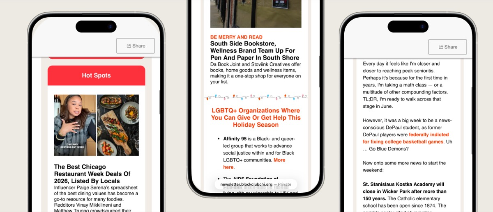

Sports-Betting Tax News App in HTML and JavaScript
Interactive calculator built to accompany NBC5 Chicago's investigation of Illinois' new per-wager sports-betting tax. Case study, repo
Freelance audience product manager, and sometimes a newsroom jack-of-all-trades. I love audience work.
Through good design, curation and analytics, I help newsrooms grow their newsletters, social channels and everything else that keeps getting folded into the fickle “audience” title.
My clients have included Michigan Public, an NPR affiliate, and The Hechinger Report. Before freelancing, I produced Block Club Chicago's daily newsletters as an intern for lists totaling more than 100,000 subscribers, and I ran digital at The DePaulia. The reporting I did along the way won three Peter Lisagor Awards and a Crystal Pillar at the 2026 Chicago/Midwest Emmy Awards.
Civic, arts and LGBTQ+ stories from Block Club and The DePaulia.
Editions I wrote and built at Block Club Chicago.
What the problem was, what I did, what it moved.
About three months before federal immigration agents arrived in Chicago for Operation Midway Blitz in fall 2025, I'd pitched WhatsApp as a way to reach Spanish-speaking readers on the Southwest Side. The raids made it urgent.
In 2021, Pew found Hispanic Americans used WhatsApp at 46%, far above other groups, and it mirrors how many residents already organize: family threads, group chats, local broadcasts. A broadcast channel is one-way, so readers get the news without it turning into a group chat.
WhatsApp only shows 30 days of reach and follower data, and subscribers are anonymous. I'd build our own tracking into the links from day one. I'd also set a recurring reminder once we dropped below daily posting, because a channel that isn't part of the daily workflow slips.
The American Journalism Project, the Medill Solutions Journalism Hub and the Knight Foundation each wrote about the channel, and Reuters mentioned it in a report on student journalists covering ICE. I also presented the channel to the Newspack community.

Block Club sends more than 25 editions a week across lists totaling more than 130,000 subscribers, most of them reading on a phone. Each one has to tell a reader what matters in their neighborhood in a few seconds, and the day's coverage keeps changing after the edition is drafted.
Illinois added a per-wager tax on online sports bets, charged to the sportsbooks. A charge on every bet is hard to picture from a story alone, so the calculator shows readers what it could cost them, based on how they bet, if sportsbooks passed it straight through.
The investigation won the 2026 Chicago Headline Club Peter Lisagor Award for Best Politics & Government Reporting (Student) and was nominated for a 2026 Chicago/Midwest Emmy in College Student Production: Sports.
The students I talked to were getting their news from short-form video. The DePaulia's Instagram needed to meet them there, with a workflow a rotating student staff could keep running after I left.